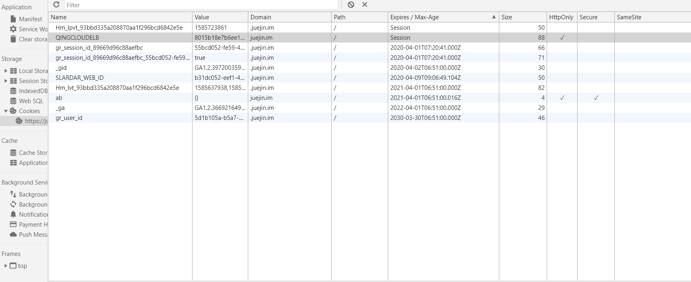

前言
cookie是什么，cookie就是一种浏览器管理状态的一个文件，它有name，也有value，后面那些看不见的是Domain、path等等。
Cookie主要用于以下三个方面：

cookie原理
第一次访问网站的时候，浏览器发出请求，服务器响应请求后，会将cookie放入到响应请求中，在浏览器第二次发请求的时候，会把cookie带过去，服务端会辨别用户身份，当然服务器也可以修改cookie内容。
cookie不可跨域
cookie不能在不同的域名下用，每个cookie都会绑定单一的域名。
cookie的属性
- name
- 这个显而易见，就是代表cookie的名字的意思，一个域名下绑定的cookie，name不能相同，相同的name的值会被覆盖掉。
- value
- 这个就是每个cookie拥有的一个属性，它表示cookie的值。
- domain
- 这个是指的域名，这个代表的是，cookie绑定的域名，如果没有设置，就会自动绑定到执行语句的当前域，还有值得注意的点，统一个域名下的二级域名也是不可以交换使用cookie的，比如，你设置
www.baidu.com和image.baidu.com,依旧是不能公用的。
- 这个是指的域名，这个代表的是，cookie绑定的域名，如果没有设置，就会自动绑定到执行语句的当前域，还有值得注意的点，统一个域名下的二级域名也是不可以交换使用cookie的，比如，你设置
- path
- path这个属性默认是’/‘，这个值匹配的是web的路由，举个例子：
默认路径 www.baidu.com,blog路径www.baidu.com/blog， path为/blog。当你路径设置成/blog的时候，其实它会给/blog、/blogabc等等的绑定cookie。
- path这个属性默认是’/‘，这个值匹配的是web的路由，举个例子：
cookie的有效期
有效期就是前言图中的Expires属性，一般浏览器的cookie都是默认储存的，当关闭浏览器结束这个会话的时候，这个cookie也就会被删除，这就是session(会话储存)。
如果你想要cookie存在一段时间，那么你可以通过设置Expires属性为未来的一个时间节点，Expires这个是代表当前时间的，这个属性已经逐渐被Max-Age所取代。
Max-Age，是以秒为单位的，Max-Age为正数时，cookie会在Max-Age秒之后，被删除，当Max-Age为负数时，表示的是临时储存，不会生出cookie文件，只会存在浏览器内存中，且只会在打开的浏览器窗口或者子窗口有效，一旦浏览器关闭，cookie就会消失，当Max-Age为0时，又会发生什么呢，删除cookie，因为cookie机制本身没有设置删除cookie，失效的cookie会被浏览器自动从内存中删除，所以，它实现的就是让cookie失效。
secure
这个属性译为安全，http不仅是无状态的，还是不安全的协议，容易被劫持，当这个属性设置为true时，此cookie只会在https和ssl等安全协议下传输。
提示：这个属性并不能对客户端的cookie进行加密，不能保证绝对的安全性
HttpOnly
为避免跨域脚本 (XSS) 攻击，通过JavaScript的 Document.cookie API无法访问带有 HttpOnly 标记的Cookie，它们只应该发送给服务端。如果包含服务端 Session 信息的 Cookie 不想被客户端 JavaScript 脚本调用，那么就应该为其设置 HttpOnly 标记。
SameSite Cookies
SameSite Cookie允许服务器要求某个cookie在跨站请求时不会被发送，从而可以阻止跨站请求伪造攻击（CSRF）。
SameSite cookies是相对较新的一个字段，所有主流浏览器都已经得到支持。
下面是例子：
Set-Cookie: key=value; SameSite=Strict
JS操作cookie
通过Document.cookie属性可创建新的Cookie，也可通过该属性访问非HttpOnly标记的Cookie。
1 | document.cookie = "yummy_cookie=choco"; |
服务端操作cookie
响应首部 Set-Cookie被用来由服务器端向客户端发送 cookie。
1 | Set-Cookie: <cookie-name>=<cookie-value> |
——-参考：